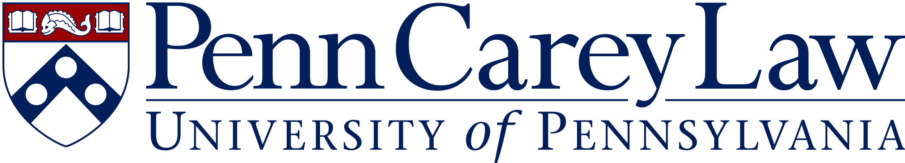

Requests for Proposals
The next cycle opens this September.
Applications for the second year of the Penn MEDIATED Research Grants will open in September 2026. Full evaluation criteria, eligibility requirements, funding terms, and key dates will be posted here once the request for proposals is finalized.
Questions in the meantime? Email contact-us@infodem.upenn.edu.
Past Requests for Proposals
Closed 2025 RFP Guidelines
Evaluation Criteria
-
01
Focus on the information ecosystem (such as traditional mass media, digital news, podcasters, influencers, social media, search engines, or generative AI), and its effects on democracy (such as through political speech, censorship, polarization, civic participation, voting and elections).
-
02
Use of empirical research, using data and computational methods to advance the scientific understanding of the information ecosystem and its interactions with democracy. New empirical methods, data sources, and open-source software are encouraged but not required.
-
03
Prioritization of impact, such that the research has a direct and explicit relationship to improving the information ecosystem and supporting democracy.
Secondary Goals
We also encourage interdisciplinarity, dissemination activities, and community building, and welcome proposals that engage with the Center on Media, Technology and Democracy to advance these secondary goals:
Interdisciplinarity
Especially applications involving collaboration from researchers across several affiliated Penn schools.
Dissemination Activities
Including tool building and deployment, articles, op-eds, blog posts, data visualizations, public events, and conference presentations.
Community Building
Bringing together empirical scholars of the information ecosystem from across Penn and the broader academic community.
Eligibility
Faculty, postdoctoral students, PhD students, research staff, and affiliated scholars from these Center-affiliated schools are eligible to apply (collaborators need not all be affiliated). Non-faculty applicants must identify a faculty collaborator or mentor:
-

-

-
-
-
-
-
Grant Terms
Typically $7,500–$15,000; larger amounts may be considered for projects involving multiple Penn-affiliated researchers.
Typically 12–15 months, starting on January 1, 2026, although longer and shorter grants may be considered. Unspent funds after the proposed grant period will be reclaimed by the Center, unless an extension is granted.
Funding support will typically not cover researcher salaries, but may support data purchasing, data collection, data annotation, hardware and/or software, engineering or deployment expenses, cloud computing, research assistants, behavioral experiments, and impact-oriented activities.
Funded projects must provide recognition of the Penn MEDIATED Research Grant program on all publications and conference presentations, and may be asked to promote the research in coordination with the Center.
Key Dates (2025 Cycle)
Proposal Requirements
- 01
A 200–300 word proposal abstract.
- 02
A 500–1,000 word description of the proposed research, including research questions and methodology.
- 03
A 300–500 word statement on the impact of the proposed work on the information ecosystem and democracy.
- 04
A budget detailing projected costs, total funding requested, and any other funding sources.
- 05
A timeline of key project milestones and completion.